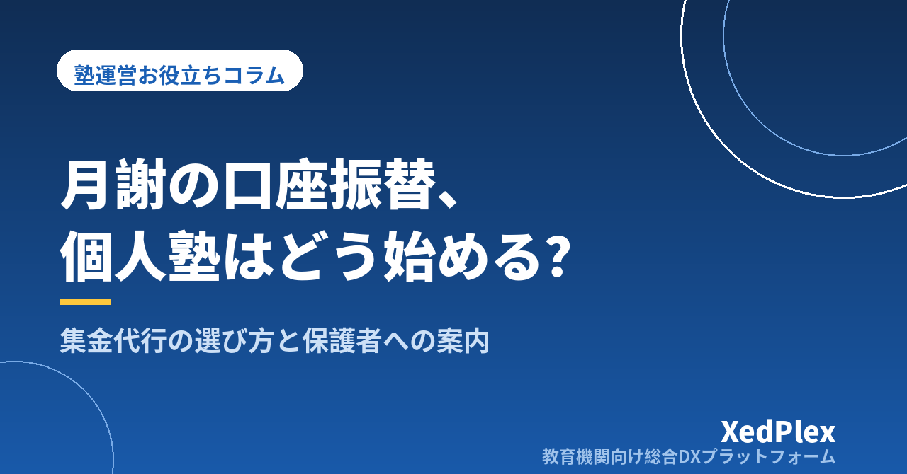

個人塾が口座振替を導入する手順と検討ポイント｜集金代行の選び方と保護者への案内

月末が近づくと、通帳を開いて振込を一件ずつ照合し、まだ入っていない家庭に連絡を入れ、授業の合間に月謝袋を受け取って金庫にしまう──。生徒が20名、30名と増えるにつれて、この作業は「月に一度の事務」から「毎週どこかで気にしていること」に変わっていきます。
口座振替にすれば楽になるのは分かっている。けれど、何から手をつければいいのか、費用はどのくらいか、保護者に嫌がられないかが分からず、先延ばしにしている塾長は少なくありません。検索して出てくる情報の多くはサービス提供側の説明で、「自分の塾の規模で見合うのか」が判断しにくいのも事実です。
この記事では、個人塾の目線で、検討の目安、導入までの2つの経路、費用の見方、業者選びの確認項目、保護者への案内と切り替えの段取り、振替できなかったときの運用までをまとめます。集金方法全般の比較は月謝管理・集金方法の記事に、未納が起きたあとの対応は月謝未納の催促の記事にまとめています。
口座振替を検討する目安は「生徒数」より「月にかけている時間」
「生徒が何名になったら口座振替にすべきか」とよく聞かれますが、線引きは生徒数だけでは決まりません。判断の物差しは、集金と入金確認に毎月どれだけの時間と気力を使っているかです。次の項目に2つ以上当てはまるなら、検討を始める時期です。
- 毎月、入金確認と未入金者への連絡に合計2時間以上かかっている
- 振込名義が生徒名と違う（保護者名・祖父母名など）ため、照合に手間取ることがある
- 手渡しの月謝を保管・両替・入金するために銀行へ行く日がある
- 未納の連絡をするたびに気が重く、後回しにして翌月にずれ込んだことがある
- 講習費や教材費を月謝とは別に集めていて、集金の回数が月に複数回ある
口座振替は、これらを「毎月同じ日に、同じ手順で、自動的に」置き換える仕組みです。効果は時間の削減よりも「気にしなくてよくなる」ことに表れます。逆に、生徒が10名前後で全員が期日どおりに振り込んでくれているなら、急いで導入する必要はありません。
導入の経路は2つ：金融機関に直接申し込むか、集金代行を使うか
口座振替を始めるには、大きく分けて2つの経路があります。どちらを選ぶかで、準備の手間と月々の費用の構造が変わります。
| 金融機関に直接申し込む | 集金代行サービスを使う | |
|---|---|---|
| 仕組み | 自塾の取引銀行と口座振替の契約を結び、その銀行の口座を持つ家庭から引き落とす | 代行会社が多くの金融機関と契約済みで、家庭の口座がどの銀行でも引き落とせる |
| 対応できる口座 | 原則としてその金融機関の口座のみ。保護者が口座を新設する必要が出ることがある | 都市銀行・地方銀行・ゆうちょ・信用金庫など幅広い |
| 審査・契約 | 金融機関ごとの審査。個人事業では契約に至らないケースもある | 代行会社の審査。個人事業・小規模でも契約できるサービスが多い |
| 依頼書の処理 | 塾が回収して金融機関へ提出 | 代行会社が回収・確認を担うか、塾が回収して代行会社へ送る（Web手続きに対応するサービスもある） |
| 振替結果の把握 | 金融機関から届く結果を自分で確認 | 結果一覧が届く。管理画面で確認できるサービスもある |
| 費用 | 振替手数料は比較的安いことが多いが、事務は自前 | 初期費用・月額基本料・振替手数料などがかかるが、事務が大幅に減る |
個人塾で現実的なのは、多くの場合集金代行サービスを使う経路です。保護者の口座を限定しないため案内がしやすく、契約のハードルも低いためです。ただし、地域の信用金庫などが小規模事業者向けに口座振替を扱っていて、地元の家庭の多くがその金融機関を使っている場合は直接契約も選択肢になります。まずは取引先の金融機関に「口座振替の契約はできるか」を一度聞いてみると、比較の土台ができます。
費用は「5つの項目」に分けて見積もる
集金代行の料金表は会社ごとに項目の立て方が違い、そのままでは比べにくいものです。次の5項目に分解して、自塾の生徒数で1か月あたりいくらになるかを自分で計算してから比較します。
| 項目 | 内容 | 確認すること |
|---|---|---|
| 初期費用 | 契約時に一度だけかかる費用 | 無料のサービスもある。依頼書の用紙代が別か |
| 月額基本料 | 件数にかかわらず毎月かかる費用 | 振替がない月（講習のみの月など）も発生するか |
| 振替手数料 | 引き落とし1件ごとにかかる費用 | 成功件数で数えるか、依頼件数で数えるか |
| 振込手数料 | 集めたお金を塾の口座へ振り込むときの費用 | 月に何回まとめて振り込まれるか、入金までの日数 |
| その他 | 振替不能時の再請求、通知はがき、依頼書の不備確認など | 何が標準で何がオプションか |
計算するときは、「初期費用＋（月額基本料＋振替手数料×生徒数＋振込手数料）×12か月」を1年分の目安として出しておくと、複数社を同じ土俵で比べられます。生徒数が今後増える見込みなら、20名・40名・60名の3パターンで計算しておくと、規模が変わったときにどこで逆転するかが見えます。
振替手数料を塾が負担するか、保護者に月謝と合わせてご負担いただくかは、塾ごとの方針です。保護者負担にする場合は、入塾規約や月謝規定に明記し、切り替え時の案内文で必ず触れます。「今まで振込手数料をご負担いただいていたので、その代わりになります」と説明できる場合は理解を得やすいですが、負担が増える形になる場合は月謝改定の告知と同じ丁寧さで案内します。
業者選びで確認したい7つの項目
費用が同じ程度なら、決め手になるのは毎月の運用がどれだけ楽になるかです。問い合わせや資料請求のときに、次の7項目を確認します。
- 個人事業・小規模でも契約できるか：最低件数や法人限定の条件がないか。開業したばかりでも申し込めるか。
- 対応している金融機関の範囲：地元の信用金庫・農協・ネット銀行まで含まれるか。自塾の保護者が使っていそうな金融機関を3〜4行挙げて確認する。
- 依頼書の手続き方法：紙の依頼書のみか、Web上で口座登録ができるか。Web対応なら保護者の記入ミス・印鑑相違による差し戻しが減る。
- 振替日と締切日：振替日が月末など固定か選べるか、振替データの提出締切が振替日の何営業日前か。自塾の請求の締め（欠席や講習費の確定）に間に合うか。
- 金額を毎月変えられるか：講習費・教材費が加わる月に、生徒ごとに違う金額を指定できるか。同一金額しか指定できないと、結局は別集金が残る。
- 振替結果の受け取り方：結果一覧がいつ、どの形式（管理画面・CSV・郵送）で届くか。振替不能の家庭がすぐ分かるか。
- データの受け渡し方法：振替データを管理画面に手入力するのか、CSV等のファイルで取り込めるのか。生徒名簿や請求データから作った一覧をそのまま渡せると、毎月の作業が数分で済む。
特に4〜7は、契約後に「思っていたのと違う」となりやすい項目です。システム選びの記事で挙げた「名簿とお金がつながるか」と同じで、請求データと振替データが二重入力にならないかを先に確かめておくと、導入後の手間が大きく変わります。
保護者への案内と切り替えの段取り
導入でいちばん時間がかかるのは、契約ではなく保護者から口座振替依頼書を集めて、初回の振替が動き出すまでです。依頼書の提出から実際の引き落とし開始までは、金融機関での登録処理を挟むため、一般に1〜2か月程度の期間を見ておく必要があります。逆算して、次のような段取りを組みます。
| 時期の目安 | やること |
|---|---|
| 開始3か月前 | 代行会社の比較・契約、月謝規定への追記（振替日・手数料・振替不能時の扱い） |
| 開始2か月前 | 保護者へ案内文と依頼書を配布。提出期限を2〜3週間後に設定 |
| 開始1か月半前 | 未提出の家庭に個別に声かけ。記入不備の差し戻し対応 |
| 開始1か月前 | 依頼書を提出・登録。初回振替の対象者と金額を確定 |
| 初回振替の1週間前 | 「〇日に〇〇円を引き落とします」の事前通知を全員に配信 |
| 初回振替後 | 結果を確認し、振替不能の家庭に連絡。従来の集金方法は最後にもう1か月だけ併用 |
案内文に入れる5つの要素
案内文は、「なぜ変えるのか」「保護者にとって何が変わるのか」が最初に分かる構成にします。塾側の都合だけを書くと、手続きの負担ばかりが目立ってしまいます。
月謝のお支払い方法変更（口座振替）のご案内
いつも□□塾をご利用いただきありがとうございます。このたび、〇月分の月謝より、お支払い方法を口座振替に変更させていただくことになりました。
これまで毎月のお振込やお持たせをお願いしてまいりましたが、口座振替にすることで、毎月のお手続きや振込手数料のご負担がなくなり、お支払い忘れの心配もなくなります。
・振替日：毎月〇日（金融機関休業日の場合は翌営業日）
・振替の対象：月謝、教材費、講習費（該当月のみ）
・振替手数料：塾が負担いたします
・初回振替：〇月〇日（〇月分より）
・お手続き：同封の口座振替依頼書にご記入・ご捺印のうえ、〇月〇日までにご提出ください
ご不明な点は、お気軽に□□塾（電話：000-0000-0000）までお問い合わせください。
ポイントは、保護者側のメリット、振替日、対象となる費用、手数料の負担、初回の日付、提出期限の5つを1枚で完結させることです。記入例を同封すると、印鑑相違や口座番号の桁違いによる差し戻しが目に見えて減ります。
「口座振替に抵抗がある」家庭への対応
一定数、「引き落としは避けたい」という声があります。無理に全員を切り替えようとすると信頼を損ねるため、原則は口座振替とし、希望する家庭には振込を残すのが現実的です。ただし例外が増えるほど二重管理になるため、振込を残す場合は「振込手数料はご負担いただく」「期限は振替日と同じ」と条件を揃えておきます。
振替できなかったときの運用を先に決めておく
口座振替にしても、残高不足などで引き落とせない月は一定の割合で起きます。ここでの対応が決まっていないと、結局は「言いにくい催促」が戻ってきます。導入と同時に、次の3点を決めて月謝規定と案内文に書いておきます。
- 再振替の有無：代行会社に再振替の仕組みがあるなら利用するか。ない場合は振込でのお支払いをお願いするか。
- 連絡のタイミングと文面：振替結果が届いた日のうちに、事実だけを伝える定型文を送る。「〇月分の口座振替ができませんでした。お手数ですが〇日までに下記口座へお振込みください」のように、原因の推測は書かない。
- 振替不能時の手数料：再振替や振込の手数料を誰が負担するか。
口座振替の利点は、未納の把握が「誰が払っていないか調べる作業」から「結果一覧を見る作業」に変わることにあります。連絡の文面まで型にしておけば、この作業は短時間で終わります。
名簿・請求と振替データをつなげると、毎月の作業が「確認だけ」になる
口座振替を導入した塾で次に起きるのが、「請求額を決める作業」と「振替データを作る作業」の二重入力です。エクセルの名簿で今月の金額を計算し、代行会社の画面に一件ずつ打ち込む運用だと、生徒数が増えるほど入力ミスと確認の手間が増えます。
生徒名簿・コース・講習費・欠席分の調整が一か所にあり、そこから月次の請求額を確定して振替データをそのまま出力できれば、毎月やることは「金額の確認」と「結果の確認」だけになります。請求書発行の自動化の記事で紹介した「雛形化→名簿連動→システム化」の最終段階が、この口座振替データとの連動です。
まとめ：導入までのチェックリスト
| 段階 | 確認すること |
|---|---|
| 検討 | 集金と入金確認に月何時間使っているか。生徒数3パターンで1年分の費用を試算したか |
| 経路の選択 | 取引金融機関で直接契約できるか聞いたか。集金代行の候補を2〜3社比べたか |
| 業者確認 | 対応金融機関・依頼書の方法・振替日と締切・金額変更・結果の受け取り・データの受け渡しを確認したか |
| 規定整備 | 振替日・手数料負担・振替不能時の扱い・振込を残す場合の条件を月謝規定に書いたか |
| 案内 | 案内文に5要素を入れたか。記入例を同封したか。提出期限と声かけの日を決めたか |
| 運用 | 初回の事前通知、結果確認の担当と日、振替不能時の定型文を用意したか |
口座振替の導入は、契約そのものより「規定を整えて、保護者に案内し、初回を無事に終える」までの段取りがすべてです。一度動き出せば、月謝の集金は「毎月気にしていること」から「月に一度、結果を確認するだけのこと」に変わります。まずは代行会社2〜3社の資料請求から始めてみてください。
この記事を書いた運営より
私たちは、個人経営・小規模の学習塾向けに、生徒管理・QRコードでの入退室記録・月次請求・保護者へのLINE/メール通知・AIによる学習支援までをひとつにまとめた教育機関向け総合DXプラットフォーム「XedPlex（ゼドプレックス）」を開発・提供しています。初期費用は0円、料金は生徒1名あたり月額300円（税込）から。生徒50名の塾なら月15,000円（税込）です。全国8つの教室で導入されており、導入塾には紹介ホームページの無料作成も行っています。機能の詳細説明はこちら。
XedPlexの詳細を見る